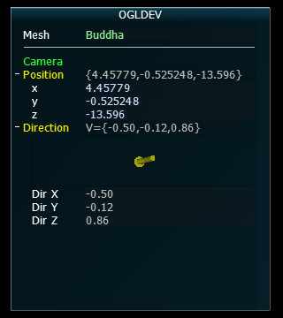

Tutorial 48:User Interface with Ant Tweak Bar
Background
In this tutorial we are going to leave 3D for a while and focus on adding something practical and useful to our programs. We will learn how to integrate a user interface library which will help in configuring the various values that interest us in the tutorials. The library that we will use is called Ant Tweak Bar (a.k.a ATB) which is hosted at anttweakbar.sourceforge.net. There are many options available and if you do some research on the subject you will find a lot of discussions and opinions on the matter. In addition to OpenGL, ATB also supports DirectX 9/10/11 so if you want your UI to be portable this is a good advantage. I found it to be very useful and easy to learn. I hope you will too. So let’s jump right in.
Disclaimer: as I was putting the finishing touches on this tutorial I noticed that ATB is no longer supported. The official website is alive but the author states that he is no longer actively maintaining it. After some thought I decided to publish this tutorial regardless. The library has proved to be very useful to me and I plan to keep using it. If you are looking for something like that and having the library being actively maintained is a requirement for you then you may need to find an alternative but I think many people can use it as it is. Since this is open source there is always a chance someone will pick up maintenance.
Installation
Note: ATB doesn’t work with version 3 of GLFW. In case you need this support you can use AntTweakBarGLFW3.
The first thing we need to do is to install ATB. You can grab the zip file from the ATB website (version 1.16 when this tutorial was published) which contains almost everything you need or use a copy of the files that I provide along with the tutorials source package. If you decide to go with the official package simply grab it from the link above, unzip it somewhere and grab AntTweakBar.h from the include directory and copy it where your project sees it. On Linux I recommend putting it in /usr/local/include (requires root access). In the tutorials source package this file is available under Include/ATB.
Now for the libraries. If you are using Windows this is very easy. The official zip file contains a lib directory with AntTweakBar.dll and AntTweakBar.lib (there is also a matching couple for 64 bits). You will need to link your project to the lib file and when you run the executable have the dll in the local directory or in Windows\System32. On Linux you will need to go into the src directory and type ‘make’ to build the libraries. The result will be libAntTweakBar.a, libAntTweakBar.so and libAntTweakBar.so.1. I recommend you copy these into /usr/local/lib to make them available from everywhere. The tutorials source package contains the Windows libraries in Windows/ogldev/Debug and the Linux binaries in Lib (so you don’t need to build them).
Integration
In order to use ATB you will need to include the header AntTweakBar.h in your source code:
1#include <AntTweakBar.h>If you are using the Netbeans project that I provide then the Include/ATB directory which contains this header is already in the include path. If not then make sure your build system sees it.
To link against the libraries:
- Windows: add the AntTweakBar.lib to your Visual Studio project
- Linux: add ‘-lAntTweakBar’ to the build command and make sure the Linux binaries are in /usr/local/lib
Again, if you are using my Visual Studio or Netbeans projects then all of this is already set up for you so you don’t need to worry about anything.
Initialization
In order to initialize ATB you need to call:
1TwInit(TW_OPENGL, NULL);or in case you want to initialize the GL context for core profile:
1TwInit(TW_OPENGL_CORE, NULL);For the tutorials series I created a class called ATB which encapsulates some of the functionality of the library and adds some stuff to make it easier for integration (that class is part of the Common project). You can initialize ATB via that class using a code similar to this:
1ATB m_atb;
2
3if (!m_atb.Init()) {
4 // error
5 return false;
6}Processing Events
ATB provides widgets that allow you to modify their values in different ways. In some widgets you can simply type in a new value. Others are more graphical in nature and allows the use of the mouse in order to modify the value. This means that ATB must be notified on mouse and keyboard events in the system. This is done using a set of callback functions that ATB provides for each of the underlying windowing libraries it supports (glut, glfw, SDL, etc). If your framework is based on just one of these libraries you can simply hook ATB’s callbacks inside your callbacks. See ATB website for an example. Since OGLDEV supports both glut and glfw I’m going to show you how I integrated the callbacks into my framework so that these two libraries are supported in a unified manner. Take a look at the following three functions from the ATB class:
1bool ATB::KeyboardCB(OGLDEV_KEY OgldevKey)
2{
3 int ATBKey = OgldevKeyToATBKey(OgldevKey);
4
5 if (ATBKey == TW_KEY_LAST) {
6 return false;
7 }
8
9 return (TwKeyPressed(ATBKey, TW_KMOD_NONE) == 1);
10}
11
12bool ATB::PassiveMouseCB(int x, int y)
13{
14 return (TwMouseMotion(x, y) == 1);
15}
16
17bool ATB::MouseCB(OGLDEV_MOUSE Button, OGLDEV_KEY_STATE State, int x, int y)
18{
19 TwMouseButtonID btn = (Button == OGLDEV_MOUSE_BUTTON_LEFT) ? TW_MOUSE_LEFT : TW_MOUSE_RIGHT;
20 TwMouseAction ma = (State == OGLDEV_KEY_STATE_PRESS) ? TW_MOUSE_PRESSED : TW_MOUSE_RELEASED;
21
22 return (TwMouseButton(ma, btn) == 1);
23}These functions are basically wrappers around the native ATB callback functions. They translate OGLDEV types to ATB types and then pass the call down to ATB. They return true if ATB processed the event (in which case you can simply discard it) and false if not (so you should take a look at the event and see if it interests you). Here’s how I hooked these functions into the callbacks of the tutorial:
1virtual void KeyboardCB(OGLDEV_KEY OgldevKey, OGLDEV_KEY_STATE OgldevKeyState)
2{
3 if (OgldevKeyState == OGLDEV_KEY_STATE_PRESS) {
4 if (m_atb.KeyboardCB(OgldevKey)) {
5 return;
6 }
7 }
8
9 switch (OgldevKey) {
10 .
11 .
12 .
13 default:
14 m_pGameCamera->OnKeyboard(OgldevKey);
15 }
16}
17
18virtual void PassiveMouseCB(int x, int y)
19{
20 if (!m_atb.PassiveMouseCB(x, y)) {
21 m_pGameCamera->OnMouse(x, y);
22 }
23}
24
25virtual void MouseCB(OGLDEV_MOUSE Button, OGLDEV_KEY_STATE State, int x, int y)
26{
27 m_atb.MouseCB(Button, State, x, y);
28}If you are not familiar with OGLDEV framework then the above may not make much sense to you so make sure you spend some time with the tutorials first and get to know how things are done. Every tutorial is just a class that inherits from ICallbacks and OgldevApp. ICallbacks provides the (not surprisingly) callback functions that are called from the backend (by glut or glfw). We first let ATB know about the events and if it didn’t process them we let the app handle them (e.g passing them on to the camera object).
Create a tweak bar
You need to create at least one tweak bar which is basically a window with widgets that ATB provides to tweak your application:
1TwBar *bar = TwNewBar("OGLDEV");The string in the parenthesis is just a way to name the tweak bar.
Draw the tweak bar
In order for the tweak bar to appear in your OpenGL window there must be a call present to the TwDraw() function in the render loop. The ATB website provides the following generic render loop as an example:
1// main loop
2while( ... )
3{
4 // clear the frame buffer
5 // update view and camera
6 // update your scene
7 // draw your scene
8
9 TwDraw(); // draw the tweak bar(s)
10
11 // present/swap the frame buffer
12} // end of main loop
I placed a call to TwDraw() in the beginning of OgldevBackendSwapBuffers() (ogldev_backend.cpp:97). This function is called at the end of every main render function and is a good place to integrate TwDraw() into the framework.
Adding widgets
The above is everything you need to basically have ATB up and running in your application. Your ATB bar should now look like this:

From now on what we need to do is to add widgets and link them to our application so that they can be used to tweak parameters of our code. Let’s add a drop down box. In this tutorial I will use it to select the mesh to be displayed. We need to use the TwEnumVal structure provided by ATB in order to create a list of available items in the drop down box. That structure is made of pairs of integer and a char array. The integer is an identifier for the drop down item and the char array is the name to be displayed. Once the item list is created as an array of TwEnumVal structs we create a TwType object using the TwDefineEnum function. TwType is an enum of a few parameter types that ATB understands (color, vectors, etc) but we can add user defined types to support our specific needs. Once our TwType is ready we can use TwAddVarRW to link it to the tweak bar. TwAddVarRW() also takes an address of an integer where ATB will place the current selection in the drop down box. We can then use that integer to change stuff in our application (the mesh to be displayed in our case).
1// Create an internal enum to name the meshes
2typedef enum { BUDDHA, BUNNY, DRAGON } MESH_TYPE;
3
4// A variable for the current selection - will be updated by ATB
5MESH_TYPE m_currentMesh = BUDDHA;
6
7// Array of drop down items
8TwEnumVal Meshes[] = { {BUDDHA, "Buddha"}, {BUNNY, "Bunny"}, {DRAGON, "Dragon"}};
9
10// ATB identifier for the array
11TwType MeshTwType = TwDefineEnum("MeshType", Meshes, 3);
12
13// Link it to the tweak bar
14TwAddVarRW(bar, "Mesh", MeshTwType, &m_currentMesh, NULL);The result should look like this:
We can add a seperator using the following line:
1// The second parameter is an optional name
2TwAddSeparator(bar, "", NULL);Now we have:
Let’s see how we can link our camera so that its position and direction will always be displayed. Until now you are probably already used to printing the current camera parameters so that they can be reused later but displaying them in the UI is much nicer. To make the code reusable I’ve added the function AddToATB() to the camera class. It contains three calls to ATB functions. The first call just uses TwAddButton() in order to add a string to the tweak bar. TwAddButton() can do much more and we will see an example later on. Then we have TwAddVarRW() that adds a read/write variable and TwAddVarRO() that adds a read-only variable. The read/write variable we use here is simply the position of the camera and the UI can be used to modify this and have it reflected in the actual application. Surprisingly, ATB does no provide an internal TwType for an array of three floats so I created one to be used by the framework:
(ogldev_atb.cpp:38)
1TwStructMember Vector3fMembers[] = {
2 { "x", TW_TYPE_FLOAT, offsetof(Vector3f, x), "" },
3 { "y", TW_TYPE_FLOAT, offsetof(Vector3f, y), "" },
4 { "z", TW_TYPE_FLOAT, offsetof(Vector3f, z), "" }
5};
6
7TW_TYPE_OGLDEV_VECTOR3F = TwDefineStruct("Vector3f", Vector3fMembers, 3, sizeof(Vector3f), NULL, NULL);We can now use TW_TYPE_OGLDEV_VECTOR3F whenever we want to add a widget to tweak a vector of 3 floats. Here’s the complete AddToATB() function:
1void Camera::AddToATB(TwBar* bar)
2{
3 TwAddButton(bar, "Camera", NULL, NULL, "");
4 TwAddVarRW(bar, "Position", TW_TYPE_OGLDEV_VECTOR3F, (void*)&m_pos, NULL);
5 TwAddVarRO(bar, "Direction", TW_TYPE_DIR3F, &m_target, " axisz=-z ");
6}We have used the provided TW_TYPE_DIR3F as the parameter type that displays an array of 3 floats using an arrow. Note the addition of ‘axisz=-z’ as the last parameter of TwAddVarRO(). Many ATB functions take a string of options in the last parameter. This allows modifying the internal behavior of the function. axisz is used to change from right handed system (ATB default) to left handed system (OGLDEV default). There’s a lot of additional options available that I simply cannot cover. You can find them here.
Here’s how the tweak bar looks with the camera added:
 You are probably spending a lot of time playing with the orientation of your meshes. Let’s add something to the tweak bar to simplify that. The solution is a visual quaternion that can be used to set the rotation of a mesh. We start by adding a local Quaternion variable (see ogldev_math_3d.h for the definition of that struct):
1Quaternion g_Rotation = Quaternion(0.0f, 0.0f, 0.0f, 0.0f);We then link the quaternion variable to the tweak bar using the parameter type TW_TYPE_QUAT4F:
1TwAddVarRW(bar, "ObjRotation", TW_TYPE_QUAT4F, &g_Rotation, " axisz=-z ");Again, we need to change from right handed to left handed system. Finally the quaternion is converted to degrees:
1m_mesh[m_currentMesh].GetOrientation().m_rotation = g_Rotation.ToDegrees();The rotation vector can now be used to orient the mesh and generate the WVP matrix for it:
1m_pipeline.Orient(m_mesh[m_currentMesh].GetOrientation());Our tweak bar now looks like this:

Now let’s add a check box. We will use the check box to toggle between automatic rotation of the mesh around the Y-axis and manual rotation (using the quaternion we saw earlier). First we make an ATB call to add a button:
1TwAddButton(bar, "AutoRotate", AutoRotateCB, NULL, " label='Auto rotate' ");The third parameter is a callback function which is triggered when the check box is clicked and the fourth parameter is a value to be transfered as a parameter to the callback. I don’t need it here so I’ve used NULL.
1bool gAutoRotate = false;
2
3void TW_CALL AutoRotateCB(void *p)
4{
5 gAutoRotate = !gAutoRotate;
6}You can now use gAutoRotate to toggle between automatic and manual rotations. Here’s how the tweak bar looks like:

Another useful widget that we can add is a read/write widget for controlling the speed of rotation (when auto rotation is enabled). This widget provides multiple ways to control its value:
1TwAddVarRW(bar, "Rot Speed", TW_TYPE_FLOAT, &m_rotationSpeed,
2 " min=0 max=5 step=0.1 keyIncr=s keyDecr=S help='Rotation speed (turns/second)' ");The first four parameters are obvious. We have the pointer to the tweak bar, the string to display, the type of the parameter and the address where ATB will place the updated value. The interesting stuff comes in the option string at the end. First we limit the value to be between 0 and 5 and we set the increment/decrement step to 0.1. We set the keys ’s’ and ’d’ to be shortcuts to increment or decrement the value, respectively. When you hover over the widget you can see the shortcuts in the bottom of the tweak bar. You can either type in the value directly, use the shortcut keys, click on the ‘+’ or ‘-’ icons on the right or use the lever to modify the value (click on the circle to bring up the rotation lever). Here’s the bar with this widget:

In all of the tutorials there is usually at least one light source so it makes sense to add some code that will allow us to easily hook it up to the tweak bar so we can play with it parameters. So I went ahead and added the following methods to the various light source classes:
1void BaseLight::AddToATB(TwBar *bar)
2{
3 std::string s = Name + ".Color";
4 TwAddVarRW(bar, s.c_str(), TW_TYPE_COLOR3F, &Color, NULL);
5 s = Name + ".Ambient Intensity";
6 TwAddVarRW(bar, s.c_str(), TW_TYPE_FLOAT, &AmbientIntensity, "min=0.0 max=1.0 step=0.005");
7 s = Name + ".Diffuse Intensity";
8 TwAddVarRW(bar, s.c_str(), TW_TYPE_FLOAT, &DiffuseIntensity, "min=0.0 max=1.0 step=0.005");
9}
10
11void DirectionalLight::AddToATB(TwBar *bar)
12{
13 BaseLight::AddToATB(bar);
14 std::string s = Name + ".Direction";
15 TwAddVarRW(bar, s.c_str(), TW_TYPE_DIR3F, &Direction, "axisz=-z");
16}
17
18void PointLight::AddToATB(TwBar *bar)
19{
20 BaseLight::AddToATB(bar);
21 std::string s = Name + ".Position";
22 TwAddVarRW(bar, s.c_str(), TW_TYPE_OGLDEV_VECTOR3F, &Position, "axisz=-z");
23 s = Name + ".Attenuation";
24 TwAddVarRW(bar, s.c_str(), TW_TYPE_OGLDEV_ATTENUATION, &Attenuation, "");
25}
26
27void SpotLight::AddToATB(TwBar *bar)
28{
29 PointLight::AddToATB(bar);
30 std::string s = Name + ".Direction";
31 TwAddVarRW(bar, s.c_str(), TW_TYPE_DIR3F, &Direction, "axisz=-z");
32 s = Name + ".Cutoff";
33 TwAddVarRW(bar, s.c_str(), TW_TYPE_FLOAT, &Cutoff, "");
34}Note that ‘Name’ is a new string memeber of the BaseLight class that must be set before AddToATB() function is called on the light object. It represents the string that will be displayed in the tweak bar for that light. If you plan on adding multiple lights you must make sure to pick up unique names for them. AddToATB() is a virtual function so the correct instance according to the concrete class is always called. Here’s the bar with a directional light source:
The last thing that I want to demonstrate is the ability to get and set various parameters that control the behaviour of the tweak bar. Here’s an example of setting the refresh rate of the bar to one tenth of a second:
1float refresh = 0.1f;
2TwSetParam(bar, NULL, "refresh", TW_PARAM_FLOAT, 1, &refresh);Since moving the mouse to the tweak bar means that the camera also moves I made the key ‘a’ automatically move the mouse to the center of the tweak bar without touching the camera. I had to read the location and size of the tweak bar in order to accomplish that so I used TwGetParam() in order to do that:
1virtual void KeyboardCB(OGLDEV_KEY OgldevKey)
2{
3 if (!m_atb.KeyboardCB(OgldevKey)) {
4 switch (OgldevKey) {
5 case OGLDEV_KEY_A:
6 {
7 int Pos[2], Size[2];
8 TwGetParam(bar, NULL, "position", TW_PARAM_INT32, 2, Pos);
9 TwGetParam**(bar, NULL, "size", TW_PARAM_INT32, 2, Size);
10 OgldevBackendSetMousePos(Pos[0] + Size[0]/2, Pos[1] + Size[1]/2);
11 break;
12 }